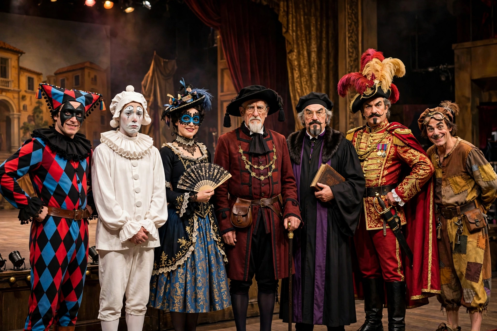

| Field | Narrative, drama, literature |
|---|---|
| Types | Protagonist, antagonist, foil, stock, flat, round |
A character in the arts is a person, animal or figure represented in a narrative work such as a novel, play, film or game.
Types
Characters may be classified as protagonists and antagonists by role; as round (complex) or flat (one-dimensional) following E. M. Forster; as dynamic or static by whether they change; and as stock characters built on familiar types.
Creation
Writers build character through description, action, dialogue, thought and other characters' reactions. In acting traditions from Aristotle's Poetics onward, character (ethos) is one element of drama alongside plot, diction, music and spectacle.
Characterisation
The way an author reveals character - directly or indirectly - shapes audience sympathy, theme and moral judgement.